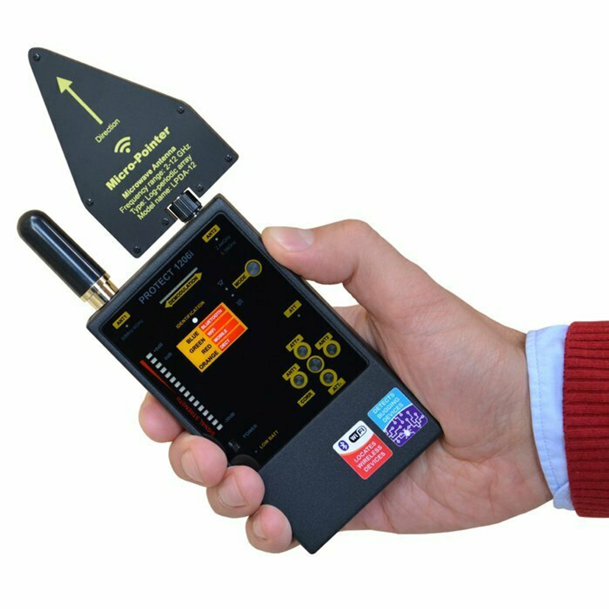
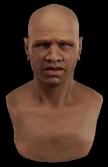
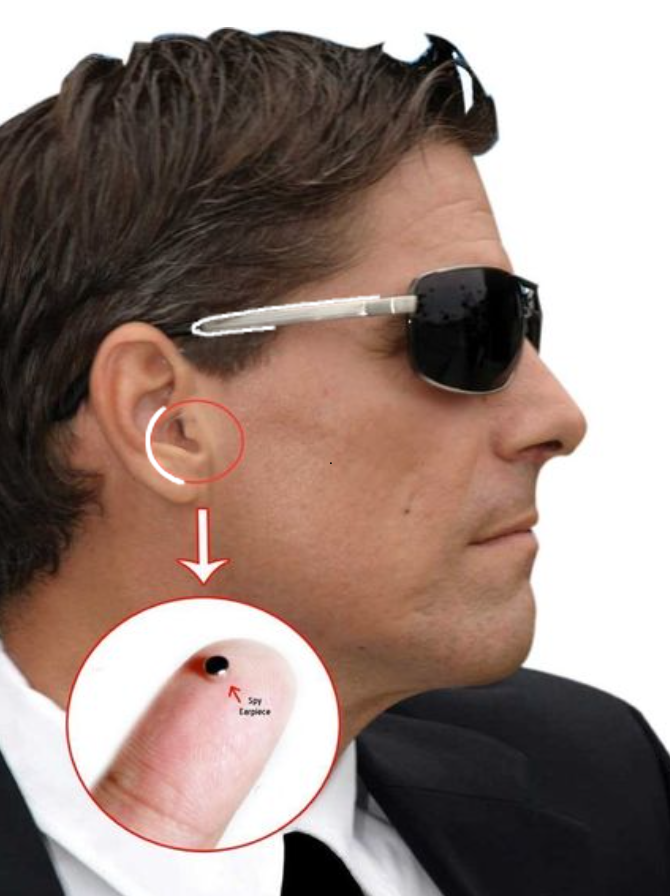

Tired of being tracked, traced, or triangulated? Introducing the Anti-Buggin-Tracking Wave-Radio SignalBlocker9000™ — the ultimate defense system for your digital (and physical) privacy. Whether you’re dodging data leeches, avoiding nosy neighbors, or just craving some true radio silence, this sleek device scrambles, jams, and shields all major signal types, from GPS and Wi-Fi to cellular, RFID, and even psychic pigeons. Src: https://images.app.goo.gl/V6vp2jtUzA3topsa8
To keep these VULTURES off our backs. We have developed state of the art technology for you to purchase! This has been built and tested by the most advanced anti-surveillance scientists in the Whole World! Save your life now and buy Today!
The Anti-Buggin-Tracking Wave-Radio SignalBlocker9000
The Anti-Buggin-Tracking Wave-Radio SignalBlocker9000
$99.99
Real Human Skin Undetectable Face Mask
Engineered for professional use in film, theater, special effects, and high-level disguise applications, the Real Human Skin Undetectable Face Mask delivers unprecedented realism and flexibility. Designed with advanced dermal-grade silicone and hand-painted with fine-pore detailing, this mask mirrors the subtleties of actual human skin — including texture, tone variation, and micro-expressions — making it virtually impossible to detect at a glance. src: https://images.app.goo.gl/kMpGW7CARvmayKyF6
Real Human Skin Undetectable Face Mask
$199.99
Hyper Hearing Device: Detect Listeners
Discreet, powerful, and built for clarity, the Mini Recording and Listening Device is your go-to tool for covert audio surveillance, interviews, note-taking, or personal security. About the size of a USB stick, this ultra-compact device slips easily into pockets, bags, or hidden locations — delivering high-quality sound capture without drawing attention. src: https://www.youtube.com/watch?v=4XWUPF_xJpQ
Hyper Hearing Device: Detect Listeners
$299.99